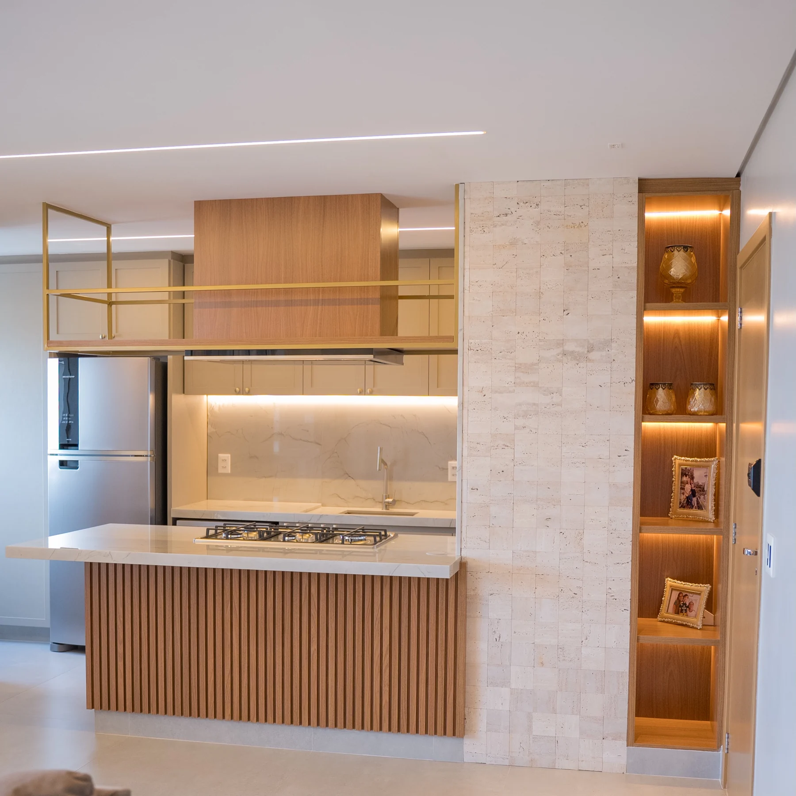
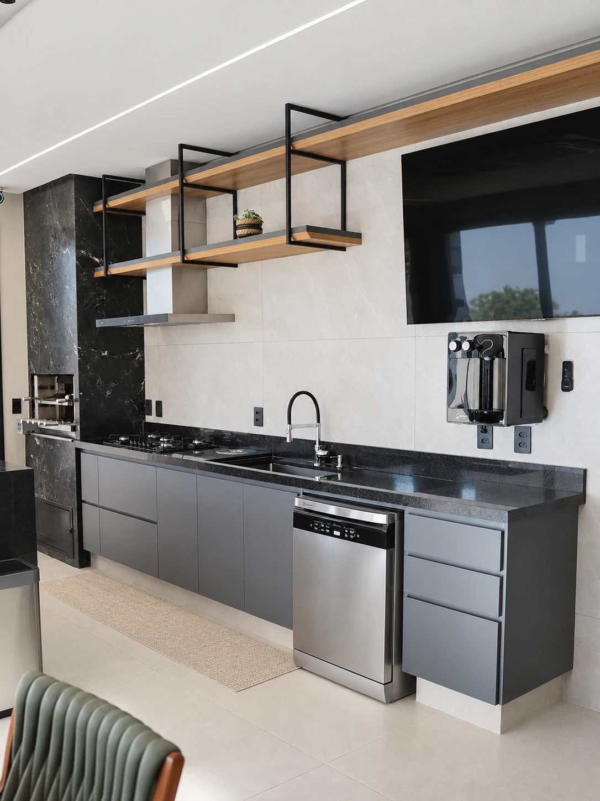
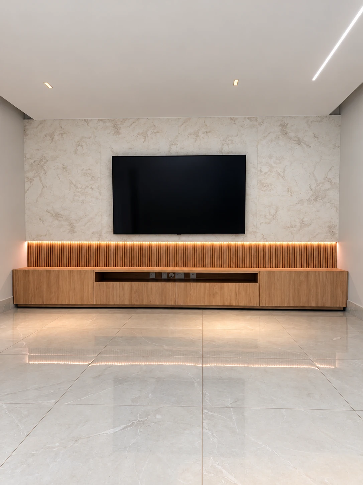
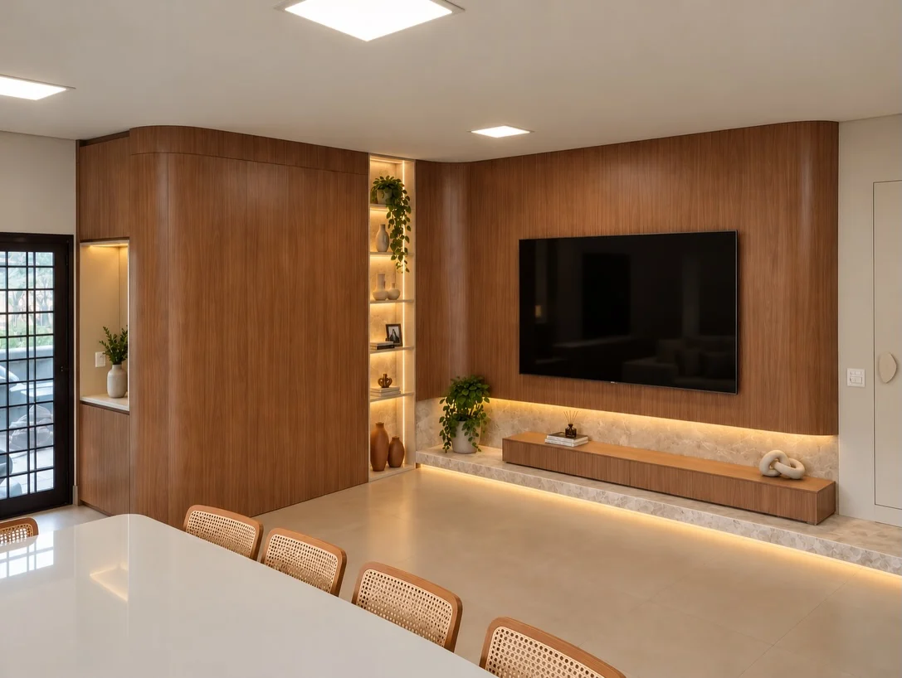
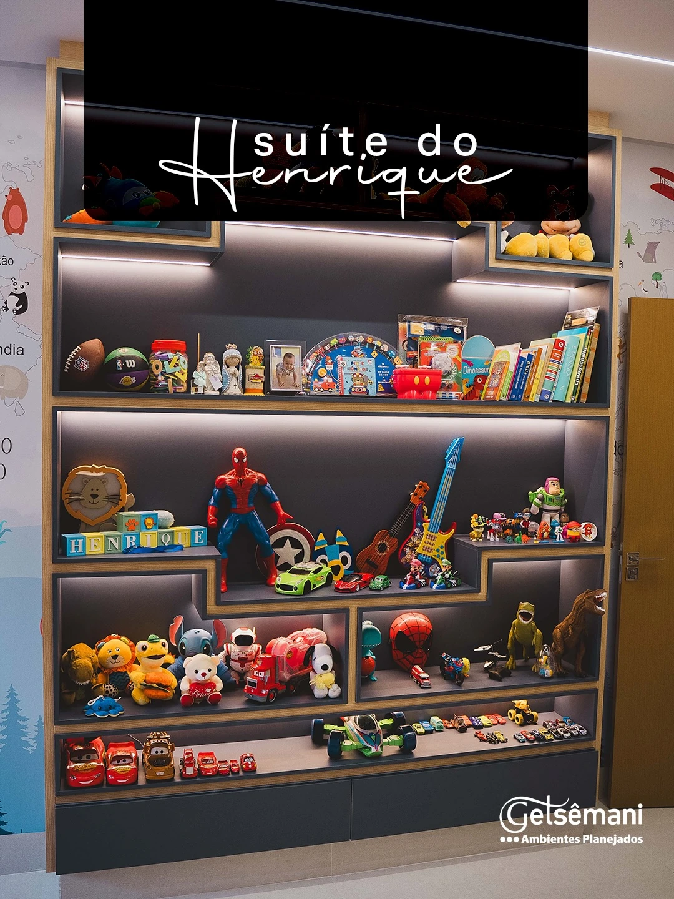
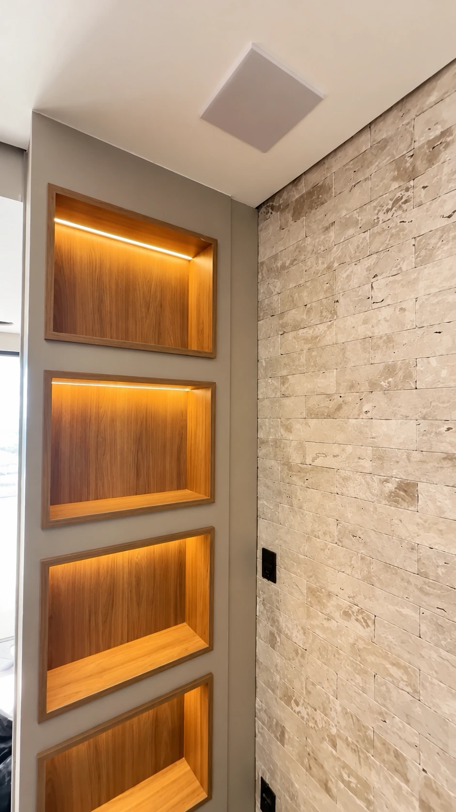

Sob medida para a sua vida.
Ambientes para
viver melhor.
Explore nossos ambientes Ambientação com IAVer original
Goiânia e regiãoMarcenaria com fabricação própria
Planejar é cuidar
de cada espaço.
Da ilha da cozinha ao painel da sala, veja como a marcenaria organiza cada ambiente.
Móveis sob medida, com fabricação própria em Goiânia e região. Para conversar sobre seu projeto, traga as medidas, referências e o que você precisa guardar.
Conheça nosso trabalhoCozinhas, painéis e ambientes.
Ilhas, nichos e móveis suspensos.
Abra as fotos para ver a marcenaria de perto.
Imagens dos ambientes publicados pela Getsêmani.


Ambientação com IAVer original
Rack amadeirado e painel claro
Nicho central e frentes em madeira

TV e jantar integrados
Nichos iluminados e bancada de jantarTratamento e ambientação visual com auxílio de IA, conforme a publicação da Getsêmani.

Ambientação com IAVer original
Área gourmet com armários escuros
Bancada escura e marcenaria em cinza

Estante azul com nichos iluminados
Livros e coleções em uma composição aberta

Nichos embutidos com iluminação
Amadeirado junto ao revestimento claroTexto removido com IA. Ver original
A iluminação contorna cada nicho e destaca a profundidade do amadeirado. Uma referência para levar à conversa sobre os detalhes do seu ambiente.
Inspire-se nos projetos e converse com a equipe sobre as possibilidades para o seu espaço.
Mais projetos no InstagramO projeto nos detalhes
O que os olhos veem.
O que a rotina sente.
Beleza e função caminham juntas. Explore alguns detalhes deste ambiente e descubra o que levar para a conversa sobre o seu projeto.
Organização
Um lugar para cada coisa.
Planejar os espaços de guardar ajuda a deixar a bancada livre e a rotina mais prática.
Toque nos pontos para explorar
Seu ambiente começa
numa boa conversa.
Fale sobre seu projeto O seu jeito de viver
Conte sobre o ambiente, sua rotina, suas referências e o que precisa funcionar melhor.
As escolhas do projeto
Converse sobre medidas, distribuição, materiais e acabamentos que façam sentido para você.
Do desenho ao ambiente
Alinhe orçamento, condições e prazo com a equipe antes de seguir com a fabricação.
Getsêmani Ambientes Planejados
Vamos dar forma
ao seu espaço?
Sua ideia, pronta para conversar.
Ver mensagem preparada
Copie sua ideia e cole na conversa com a equipe.